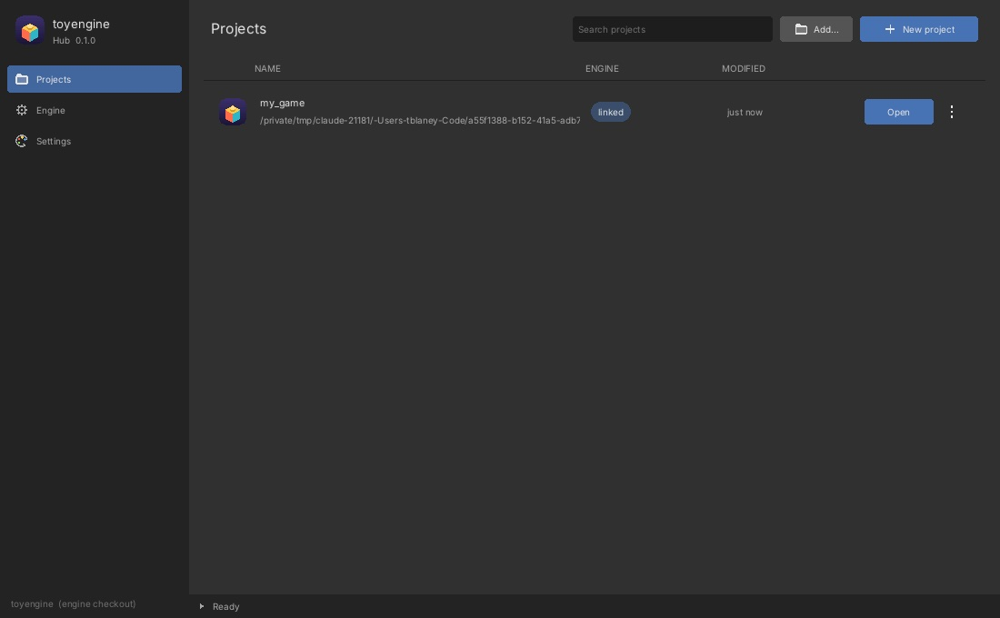

toyengine pairs a full-resolution deferred PBR renderer with volumetric fog and light,
particles, rigid-body and cloth physics, dynamic water, streamed procedural terrain,
animation, 3D audio, an interactive UI toolkit and a native editor that writes exactly the
files the game loads. It is adaptable by design: scenes,
objects, materials and render settings are plain YAML, every rendering feature has quality
tiers and a master switch, and each subsystem is its own library that can be lifted out and
used elsewhere.
Themed composites: windows, menus, stat bars, hotbars, setting rows
Crisp screen-space HUDs, or world-space canvases that stay clickable in 3D
Audio
WAV and MP3 clips through a bus mixer (Master, Music, SFX, UI)
Binaural 3D panning, distance falloff and doppler
AudioSource and AudioListener components; settings sliders bind straight to buses
toyengine_editor
An editor that feels like Blender
The editor embeds the real engine, so its Full Render viewport is the game's renderer.
Blender's keymaps, gizmos, modes and outliner, with Unity's component model.
Scenes and object assets. Hierarchy, inspector, gizmos, and play / pause / step in place. Prefab-style assets are instanced with prefab:.
Mesh modelling. Extrude, inset, bevel, loop cut and slide, bridge, Catmull-Clark subdivide, mirror and UVs. Sculpt, vertex paint and weight paint modes.
Animation. A timeline and dope sheet with record mode: move a rig and the changed channels are keyed.
Material lookdev and UI design. A shader ball with studio lighting, and a UI designer drawn by the game's own UI pass.
Render and project settings, applied live.
Plain files. Everything saves as YAML in assets/, ready to hand-edit, diff and merge.
Scenes are trees of objects with components, written in YAML. The demo scenes are heavily
commented and double as the reference for every component, and config.yaml
has a comment on every key. Packaged builds use binary .caml (Zstandard +
AES-256-GCM), and every loader reads both, so nothing needs path rewriting.
On macOS, run tools/setup_macos.sh once first to install MoltenVK, the Vulkan loader, glslc and GLFW.
Projects and shipping
From a new project to a signed build
A game lives in its own project folder with its assets and C++ components. The project
builds the engine alongside its own code, either pinned to a pushed commit for
reproducible builds or linked to a local checkout for working on both at once.
toyengine Hub. Creates, adds, opens and re-pins projects, and streams the first build into its log.
Your code in the editor. Components in src/ compile into both the game and the editor, so Play runs them. Build › Refresh rebuilds both.
Build. A standalone game that runs without the engine repo or the Vulkan SDK: a .app on macOS with MoltenVK bundled, a folder on Linux.
Development or Shipping. Shipping is a Release build with encoded .caml assets, debug hooks off, and Developer ID signing with notarization on macOS.
toyengine Hub

The coopa stack
Seven libraries, stacked like bricks
toyengine sits on pinned submodules. Each is C++20, mostly header-only, builds
standalone, and is useful without the engine.